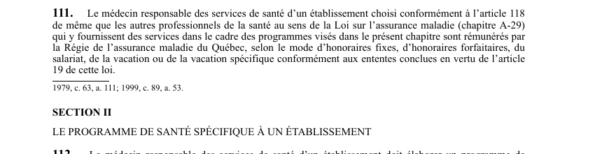

art-111-LSST : rémunération professionnels santé
Un article du wiki ⚖️ Recueil législatif
🌐 LegisQuébec · 📄 PDF officiel (page 32)
Texte officiel : capture du PDF

🔗 Ouvrir a cette page : LSST.pdf : page 32 · texte a jour au 26 mars 2024
En bref
Le médecin responsable et les autres professionnels de la santé. Il s'agit d'une obligation.
- Selon le mode d'honoraires fixes, forfaitaires, du salariat.
Voir aussi
- art. 109 : contrat Commission agence santé · la Commission conclut avec chaque agence un contrat l'engageant à assurer les services nécessaires à la mise en application des programmes de santé au travail sur son territoire ou pour les établissements identifiés, conformément au contrat type.
- art. 110 : budget annuel services santé · la Commission établit chaque année un budget pour l'application du chapitre relatif aux services de santé et en attribue une partie à chaque agence conformément au contrat, pour rémunérer le personnel et couvrir les coûts des examens et des locaux.
- art. 112 : programme santé spécifique établissement · obligation : le médecin responsable des services de santé d'un établissement doit élaborer un programme de santé spécifique à cet établissement, soumis au comité de santé et de sécurité pour approbation.
- art. 113 : contenu programme santé spécifique · obligation : le programme de santé spécifique doit notamment prévoir les mesures d'identification et d'évaluation des risques, les activités d'information, la surveillance médicale, les examens de santé, un service de premiers soins et la liste des travailleurs exposés à des contaminants.
- 🔧 Modifié par : LMRSST · Article modificateur de la LMRSST.
- ↑ Loi : LSST
Pages qui pointent ici (5)
- art-109-LSST, visite inspection Recueil législatif
- art-110-LSST, rapport inspection Recueil législatif
- art-112-LSST Recueil législatif
- art-113-LSST, programme santé spécifique à Recueil législatif
- art-174-LMRSST, mod. art. 111 LSST Recueil législatif